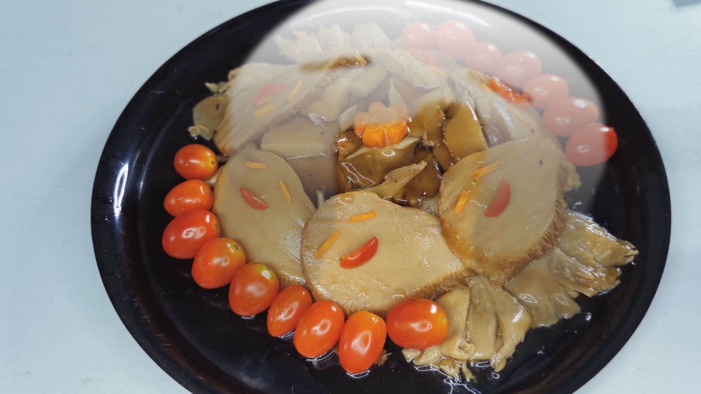

Ghostly March

Description
Hu Tao's specialty. The round-faced ghouls seem quite cute, squeezed into
a pile as they are. But if you were to fall to temptation and try but one
of them, you may yet come to regret it for a long while... After all, this
plate is full of top-quality, taste-bud-blasting—Actually, what on earth
is this stuff, anyway?
Ingredients
Non-sauce ingredients
- 200 g Oyster mushroom
- 380 g Bailing mushroom
- Broccoli optional
Garnish
- 9+7 Cherry tomatoes whole
- Carrot cut into small sticks for ghost eyes and 1 flower
Sauce
- 5 slices ginger
- 2 Tbsp Oil for frying
- 3 Tbsp Vegetarian Oyster sauce
- 2 tsp Soy Sauce
- 1/2 tsp pepper
- 1 tsp Sugar
- 1 Tbsp Cooking wine Shaoxing
- 1 tsp Rice vinegar
- 1 1/2 cup water adjust according to consistency
To finish
- Cornstarch slurry 1 tbsp cornstarch + 1 tbp water
- 1 tsp sesame oil
Steps
- Pan fry sliced mushrooms.
- When mushrooms are browned, put in sauce ingredients.
- Simmer 10-15 minutes.
- Add in cornstarch slurry and sesame oil.
-
Plate. Carrots form the eyes and flower. Cherry tomatoes form the mouth
andsurrounding. Oyster mushrooms the yellowish things around.